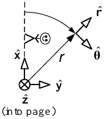
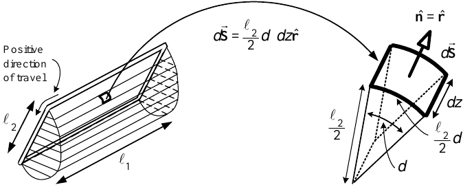

The Physics of the DC Motor
System Modeling and Control · Chapter 6

- \(\hat{\mathbf r}\), \(\hat{\boldsymbol\theta}\), and \(\hat{\mathbf z}\) denote the cylindrical-coordinate unit vectors.
- \(\hat{\mathbf z}\) points along the rotor axis into the page.
- \(\hat{\boldsymbol\theta}\) points in the direction of increasing \(\theta\); \(\hat{\mathbf r}\) points in the direction of increasing \(r\).


On side \(a'\),
\[ \vec{\mathbf F}_{a'} =i(-\ell_{1}\hat{\mathbf z})\times(-B\hat{\mathbf r}) =i\ell_{1}B\hat{\boldsymbol\theta}, \]
\[ \vec{\boldsymbol\tau}_{a'} =\frac{\ell_{2}}{2}\hat{\mathbf r}\times\vec{\mathbf F}_{a'} =\frac{\ell_{2}}{2}i\ell_{1}B\hat{\mathbf z}. \]
Thus \[ \vec{\boldsymbol\tau}_{m}=\ell_{1}\ell_{2}Bi\hat{\mathbf z}, \qquad \tau_{m}=K_{T}i, \qquad K_{T}\triangleq\ell_{1}\ell_{2}B. \]

We found \(\xi=B\ell v\).
- The magnetic force is \(\vec{\mathbf F}_{\text{magnetic}}=i\ell B\hat{\mathbf x}\), so \(v=dx/dt>0\).
- The induced voltage \(\xi>0\) opposes the source voltage \(V_{S}\).


- On the cylindrical surface, \(d\vec{\mathbf S}=(\ell_{2}/2)d\theta\,dz\,\hat{\mathbf r}\).
- On the two half-disk ends, \(\vec{\mathbf B}\cdot d\vec{\mathbf S}=0\).
From the source voltage, \[ V_{S}=Ri+L\frac{di}{dt}+\xi. \]

Multiplying by current gives \[ \begin{aligned} V_{S}i &=Ri^{2}+Li\frac{di}{dt}+iK_{b}\omega_{R}\\ &=Ri^{2}+\frac{d}{dt}\left(\frac{1}{2}Li^{2}\right) +\tau_{m}\omega_{R}. \end{aligned} \]
- \(Ri^{2}\): heat loss.
- \(d(\tfrac12Li^{2})/dt\): power stored in or recovered from the armature field.
- \(\tau_{m}\omega_{R}\): mechanical power.
- The encoder shown has 12 windows.
- Digital circuitry detects each rising and falling pulse edge.
- Twelve pulses produce 24 detectable edges per revolution.
- Resolution: \(2\pi/24\) radians, or \(360^{\circ}/24=15^{\circ}\).
- Counting the edges determines position to within \(15^{\circ}\).


- With \(N_{w}\) windows, \(2N_{w}\) rising and falling edges per revolution give resolution \[\frac{2\pi}{2N_{w}}\text{ radians}.\]
- Counting both detector outputs gives \(4N_{w}\) equally spaced edges and resolution \[\frac{2\pi}{4N_{w}}\text{ radians}.\]
- For \(N_{w}=500\), resolution is \(2\pi/2000\) radians, or \(0.18^{\circ}\).